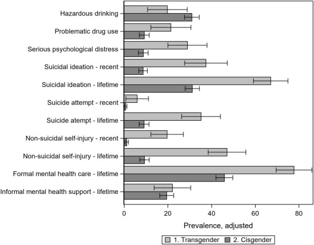

When someone in your life comes out as trans, it’s incredibly easy to worry for them.
There’s a lot about transitioning that is very hard on people that go through the process.
For someone who isn’t trans it may seem like the risks outweigh the benefits.
It doesn’t help that transitioning looks like a new modern thing.
It appears like some people may come to regret their choice further down the line.
The good news is that these fears are unfounded.

Only 2% of people who start transitioning end up changing their mind about being trans (Turban). This is far less than the 8% of people who regret having kids and the 24% who regret getting a tattoo (Piotrowski and Schaeffer). If someone comes out to you as trans, and you push back against them in case they regret it more than you would push back against someone having a kid, you’re overreacting. Transitioning is something that very few people wish they hadn’t done, and not something you need to be worried about. Instead, overly pushing back against someone’s transition may be viewed as you not being accepting of them, something that can be hurtful to people that are transitioning.
For the sake of integrity, it must be noted that the total regret rate of all transitions is higher at 13.1%, however that percentage includes the 82.5% of people who regret their choice due to a lack of acceptance from other people such as family and friends. 2.1% represents a far more important statistic as it does not include these external factors that this website is attempting to remove.
Many people are afraid that transitioning is just a modern thing that will come to pass. They believe that transitioning was invented recently, and that in a few years it will have been a fad that died out. This couldn't be further from the truth. While not often talked about or taught in schools, transitioning has a long and rich history that stretches back to the invention of written language, and most likely goes much further beyond.

Being trans is an incredibly mentally challenging experience, the hatred and disdain one feels at their own body and sense of self pre-transition places an enormous burden on trans people's shoulders. Additionally, the politicalization and hatred thrown towards our very existence places even more on top of the pile.
This unfortunately leads to trans people having extremely high rates of mental health problems compared to cis people.
Of every category researched by a study (except for hazardous drinking), it was found that trans people have a higher rate of every mental health problem (Kidd). This study showed that 81% of trans people have experienced suicidal ideation, 42% have attempted suicide, and 56% have engaged in self-harm. These percentages are far higher than cis people’s respective 35%, 11%, and 12%.
Accepting someone’s transition is a small, but incredibly impactful thing that you can do to help any trans people in your life you care about.
Not being trans is not an option, as it is a part of who someone is. Technically, they could choose not to transition, but they would live out the rest of their life hating who they were, a fate I wouldn't wish on even my worst enemies.